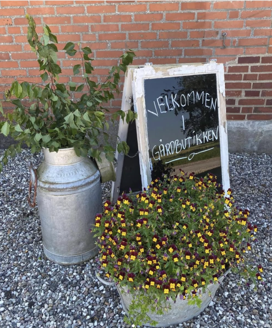
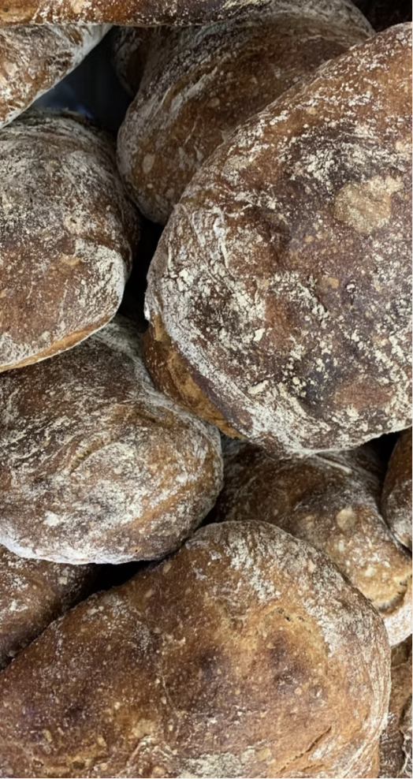
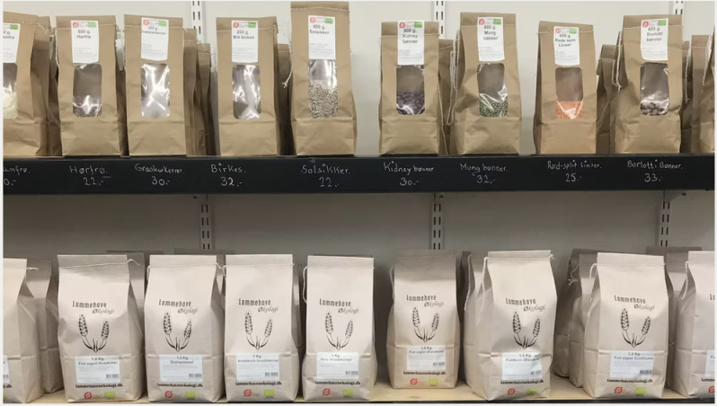
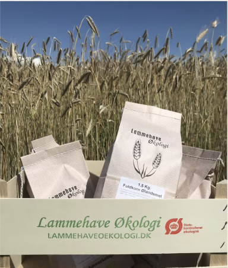
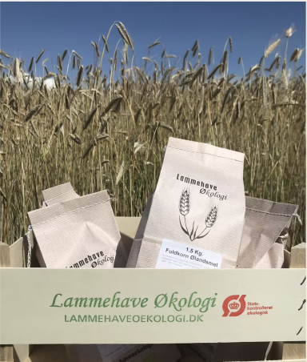
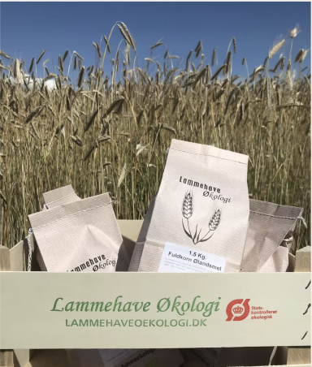

Gårdbutikken

Vores gårdbutik
I gårdbutikken finder du flere af vores produkter samt produkter fra andre økologiske og biodynamiske producenter. Butikken byder på: Lamme og grisekød i forskellige udskæringer, lamme og grisespegepølser. Mel af gamle kornsorter, dyrket og malet på gården. Grønsager, ca. 25 forskellige slags. Æg fra egne høns. Rapsolie fra egen oliemølle. Honning fra egne bier. Frugt, og most fra Andeigaard. Derudover en masse kolonialvarer: bønner, linser, kaffe, kakao og meget mere.
Åbningstider: Døgn åbent hele ugen


 

